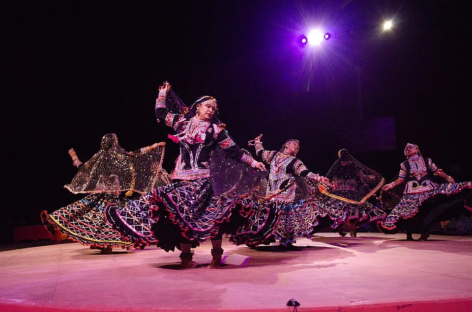

Museums and exhibitions · Arts, crafts and performance · Heritage, museums and conservation · Anthropology
Pampa, an exhibition of Karnataka's textiles, is at NGMA Bengaluru until 15 December
More than 150 saris, textile fragments, artworks and commissioned pieces trace about three centuries of weaving and embroidery in Karnataka, in a second, expanded showing of an exhibition first staged at Hampi.


- When
- 1 November 2026 to 15 December 2026
- Where
- National Gallery of Modern Art, Bengaluru, Karnataka
Pampa: Textiles of Karnataka opened at the National Gallery of Modern Art (NGMA) in Bengaluru on 1 November 2026, Karnataka Rajyotsava, and runs until 15 December. Deccan Herald reported that Union Culture and Tourism Minister Gajendra Singh Shekhawat inaugurated it. According to Deccan Herald, the Abheraj Baldota Foundation organised it with NGMA Bengaluru and the Union Ministry of Culture to mark the foundation's 50th anniversary.
The show was first staged at Hampi in March 2025. Its curators are Lavina Baldota, Mayank Mansingh Kaul and Nupur Saxena, according to The Voice of Fashion, and its title is an old name of the Tungabhadra river. The Bengaluru version adds pieces that, Baldota told Deccan Herald, could not be fitted into the earlier setting, a mantapa at Hampi.
The reports describe more than 150 exhibits, from raw materials and spinning equipment to finished saris. Among the traditions shown are Ilkal and Molakalmuru saris, Kasuti embroidery, khann brocade, Navalgund durries and the kambali wool blankets of the Kuruba pastoral community. A separate room is given to kandu, a brown cotton that Deccan Herald says is grown in Dharwad and Raichur. Also on view is a sari spun and woven by hand by Narayanappa and Kamalamma of Melkote.
Deccan Herald and The Voice of Fashion both single out an eighteenth-century embroidered textile showing scenes from the Ramayana, lent by the National Museum, New Delhi. The Voice of Fashion notes that where it was made is still debated. Contemporary work includes a couture piece by Gaurav Gupta using Molakalmuru brocade, a Lambani mirror-work canopy made at Sandur Kushala Kala Kendra, and works by N S Harsha and Archana Hande.
NGMA Bengaluru is at Manikyavelu Mansion on Palace Road. The Bengaluru Live, citing the organisers' invitation, gives the hours as 10 am to 6 pm, closed on Mondays and public holidays.
Sources
- Pampa exhibition to showcase Karnataka's legacy of textiles and sarees, The Hindu, 2026-10-30
- Karnataka's textile treasures take centre stage at Bengaluru's NGMA, Deccan Herald, 2026-11-02
- 'Pampa: Textiles of Karnataka' | Exhibition opens at NGMA Bengaluru until December 15, Deccan Herald, 2026-11-04
- Pampa: The Second Weave, The Voice of Fashion, 2026-11-16
- Pampa: Karnataka Textiles Exhibition On View At NGMA Bengaluru Until December 15, The Bengaluru Live, 2026-11-02
Written by Talaash Heritage from the sources above. Spotted an error? Write to talaashheritage@gmail.com and we will correct it on this page.
More from the Heritage desk · More in Arts, crafts and performance · Background guide